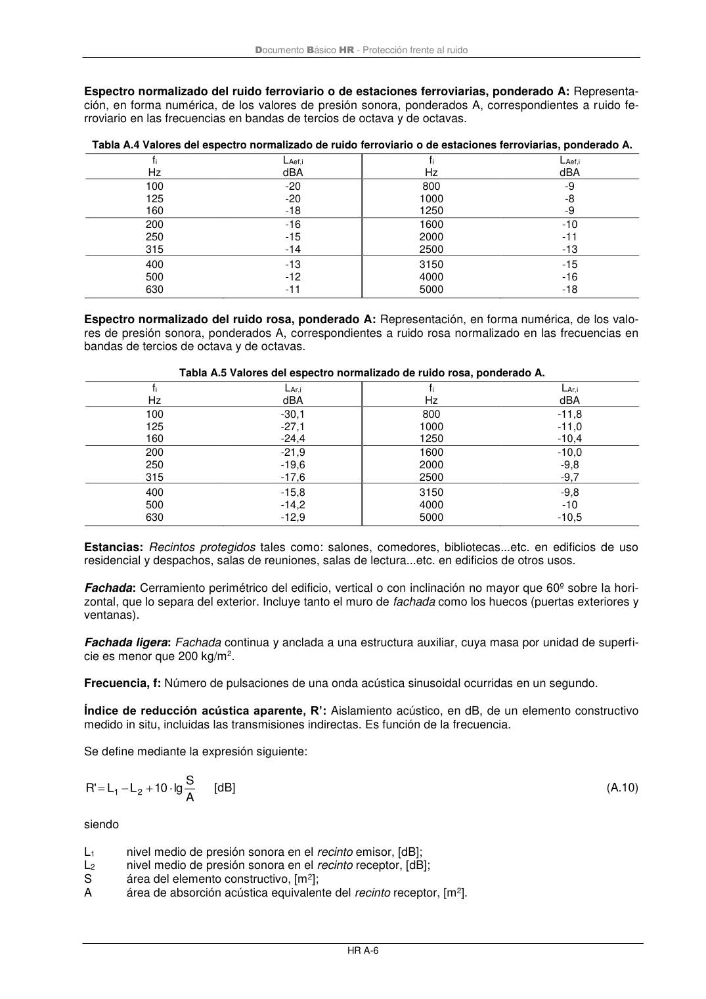

DB-HR Protección frente al ruido · edición 2019-12-20 · capa oficial
Documento DB-HR-oficial · SHA-256 del PDF a67baeca5138bb1f121f797d23a79a4557bd9ac4abacd954024893e05411eeab
Página física 48 de 80.
Copia fiel del PDF fuente · Fuente oficial
Ficha de la disposición en la fuente oficial
Formato: Texto de la página (Markdown)
Documento Básico HR - Protección frente al ruido
HR A-6
Espectro normalizado del ruido ferroviario o de estaciones ferroviarias, ponderado A: Representa-
ción, en forma numérica, de los valores de presión sonora, ponderados A, correspondientes a ruido fe-
rroviario en las frecuencias en bandas de tercios de octava y de octavas.
Tabla A.4 Valores del espectro normalizado de ruido ferroviario o de estaciones ferroviarias, ponderado A.
fi
Hz
LAef,i
dBA
fi
Hz
LAef,i
dBA
100
125
160
-20
-20
-18
800
1000
1250
-9
-8
-9
200
250
315
-16
-15
-14
1600
2000
2500
-10
-11
-13
400
500
630
-13
-12
-11
3150
4000
5000
-15
-16
-18
Espectro normalizado del ruido rosa, ponderado A: Representación, en forma numérica, de los valo-
res de presión sonora, ponderados A, correspondientes a ruido rosa normalizado en las frecuencias en
bandas de tercios de octava y de octavas.
Tabla A.5 Valores del espectro normalizado de ruido rosa, ponderado A.
fi
Hz
LAr,i
dBA
fi
Hz
LAr,i
dBA
100
125
160
-30,1
-27,1
-24,4
800
1000
1250
-11,8
-11,0
-10,4
200
250
315
-21,9
-19,6
-17,6
1600
2000
2500
-10,0
-9,8
-9,7
400
500
630
-15,8
-14,2
-12,9
3150
4000
5000
-9,8
-10
-10,5
Estancias: Recintos protegidos tales como: salones, comedores, bibliotecas...etc. en edificios de uso
residencial y despachos, salas de reuniones, salas de lectura...etc. en edificios de otros usos.
Fachada: Cerramiento perimétrico del edificio, vertical o con inclinación no mayor que 60º sobre la hori-
zontal, que lo separa del exterior. Incluye tanto el muro de fachada como los huecos (puertas exteriores y
ventanas).
Fachada ligera: Fachada continua y anclada a una estructura auxiliar, cuya masa por unidad de superfi-
cie es menor que 200 kg/m2.
Frecuencia, f: Número de pulsaciones de una onda acústica sinusoidal ocurridas en un segundo.
Índice de reducción acústica aparente, R’: Aislamiento acústico, en dB, de un elemento constructivo
medido in situ, incluidas las transmisiones indirectas. Es función de la frecuencia.
Se define mediante la expresión siguiente:
A
S
lg
10
L
L
'
R
2
1
+
−
=
[dB]
(A.10)
siendo
L1
nivel medio de presión sonora en el recinto emisor, [dB];
L2
nivel medio de presión sonora en el recinto receptor, [dB];
S
área del elemento constructivo, [m2];
A
área de absorción acústica equivalente del recinto receptor, [m2].

Datos candidatos: compruebe celdas y notas en el PDF.